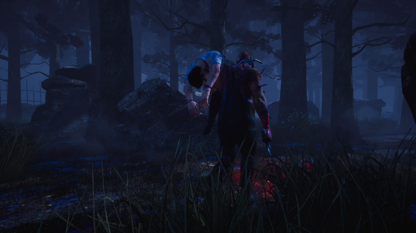

OBJECTIFS:
EN TANT QUE SURVIVANT:

COMMENT GAGNER ?
En tant que survivant, votre objectif principal est de vous échapper de la carte pour survivre. Pour cela, vous devez réparer 5 générateurs qui alimentent 2 portes de sortie, tout en évitant le tueur.

FURTIVITÉ
Les survivants n’ont aucun moyen de blesser le tueur. Pour éviter d’être pris, ils peuvent user de stratégies de base comme s’accroupir derrière des obstacles ou se cacher dans les herbes hautes, les coins sombres ou dans des casiers. Les survivants doivent faire attention quand ils effectuent des actions rapides ou qu'ils font du bruit, car cela pourrait attirer l’attention du tueur.
REPÉRER LE TUEUR
Quand le tueur est proche, vous pouvez entendre un battement de cœur. Plus le tueur est près d’un survivant, plus ce son, appelé rayon de terreur, s’intensifie. Les survivants peuvent voir une lueur rouge en forme de cône qui suit le tueur. Cette tache rouge indique la direction dans laquelle le tueur regarde.
ACTIONS ALTRUISTES
Les survivants peuvent se sauver les uns des autres des crochets pour empêcher qu'un sacrifice soit accompli. Les survivants peuvent tenter d’aveugler ou d’étourdir le tueur pour qu’il lâche le survivant qu’il transporte. Chaque survivant peut soigner les autres en état blessé ou critique, avec une trousse de premiers soins ou pas.
GÉNÉRATEURS
La première étape à accomplir pour s’échapper consiste à réparer les 5 générateurs répartis sur la carte. Réparer prend du temps et fait du bruit, ce qui peut attirer le tueur. Le tueur peut également voir la position exacte de tous les générateurs. Les survivants doivent donc surveiller les mouvements du tueur et planifier des voies de secours avant de lancer des réparations. Tout comme de nombreuses autres interactions de survivants, réparer un générateur peut déclencher des tests d’habileté.
TESTS D'HABILETÉ
Un test d’habileté est une action réflexe axée sur le temps et qui demande de toucher un bouton au bon moment ou d’en subir les conséquences. Rater un test d’habileté alerte le tueur d'un fort avertissement sonore et fait reculer la progression de l’action. Un signal sonore retentit juste avant que le test d’habileté n’apparaisse, pour aider le survivant à anticiper l’action.

S'ÉCHAPPER
Quand les survivants arrivent à réparer 5 générateurs, les portes de sortie s’activent. Une fois ouverte, la sortie permet aux survivants de s’échapper de la carte. Les survivants décident quand quitter la carte. Ils peuvent rester en arrière pour aider d’autres survivants qui n’ont pas encore réussi à sortir mais doivent s’échapper avant le Sprint final.
EN TANT QUE TUEUR:

COMMENT GAGNER ?
L’objectif principal du tueur est de satisfaire l’Entité en sacrifiant des survivants sur des crochets disponibles sur la carte. Le tueur utilise ses pouvoirs et capacités uniques pour obtenir autant de sacrifices que possible et empêcher les survivants de s’échapper.
CHASSER
Les tueurs ont des sens amplifiés qui les aident à chasser les survivants :
- Le tueur peut suivre les marques d’éraflures temporaires laissées par les survivants en fuite.
- Le tueur peut suivre les tâches de sang laissées par les survivants blessés ou en état critique.
- Le tueur reçoit des notifications sur l’emplacement d’un survivant quand celui-ci fait du bruit.

POURSUIVRE LES SURVIVANTS
En ligne droite, les tueurs sont plus rapides, mais les survivants ont plus d’un tour dans leur sac pour mettre des objets et de la distance entre le tueur et eux-mêmes, comme en sautant par une fenêtre ou par-dessus des palettes. Le but du tueur pendant une poursuite est de se mettre à portée d’attaque pour asséner un coup dévastateur au survivant.
ATTAQUER
Tous les tueurs peuvent lancer deux types d’attaques de base : une attaque rapide à courte portée et une attaque chargée à longue portée. Que les attaques portent ou non, elles déclenchent toujours un temps de récupération. Frapper un survivant deux fois l’assomme, ce qui permet au tueur de le ramasser et de le porter jusqu’à un crochet.
TRANSPORT DES SURVIVANTS
Le tueur dispose d’un temps limite pour transporter des survivants jusqu'à un crochet, car ils peuvent se débattre pour se libérer, assommant le tueur au passage. Le tueur doit également faire attention aux autres survivants, car certaines actions peuvent le forcer à lâcher son précieux chargement.
SACRIFICE
- Phase 1 - L’invocation : les survivants peuvent être sauvés ou tenter de se libérer seuls du crochet, mais ils accélèrent l’invocation de l’Entité en cas d’échec.
- Phase 2 - La lutte : les survivants doivent combattre l’Entité pour rester en vie. Ils ne peuvent plus tenter de se libérer, mais peuvent toujours être sauvés par d’autres survivants.
- Phase 3 - L’Entité dévore le survivant suspendu sur un crochet, mettant fin à la séquence de sacrifice.